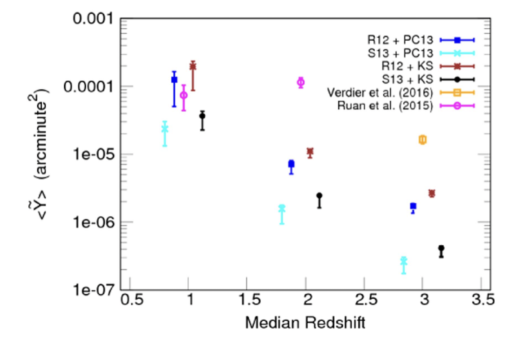
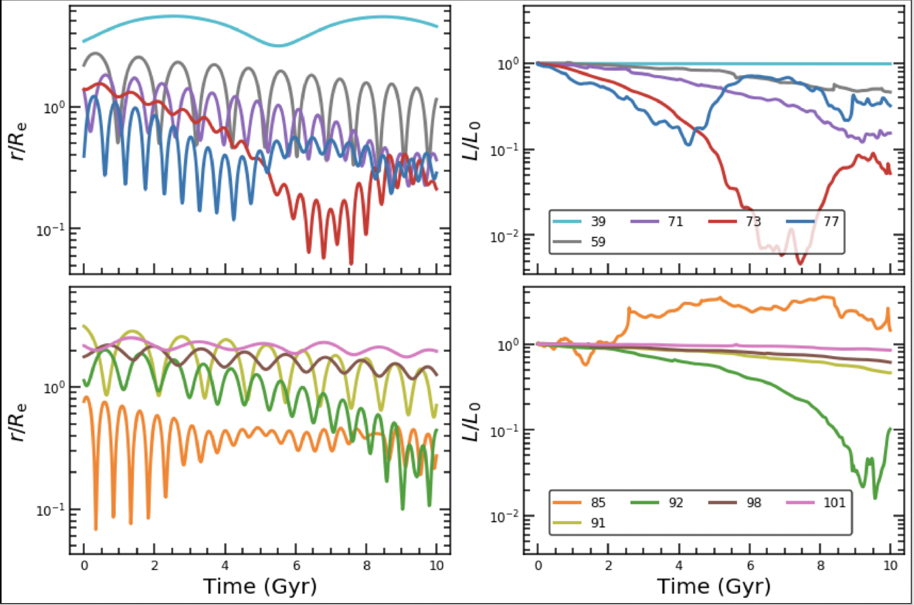
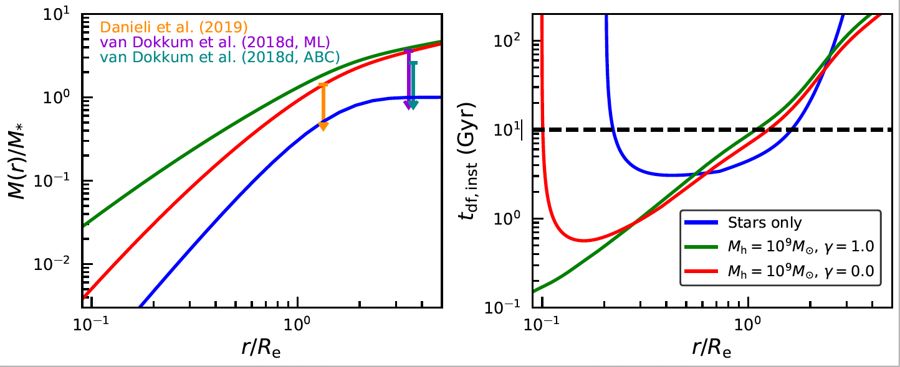
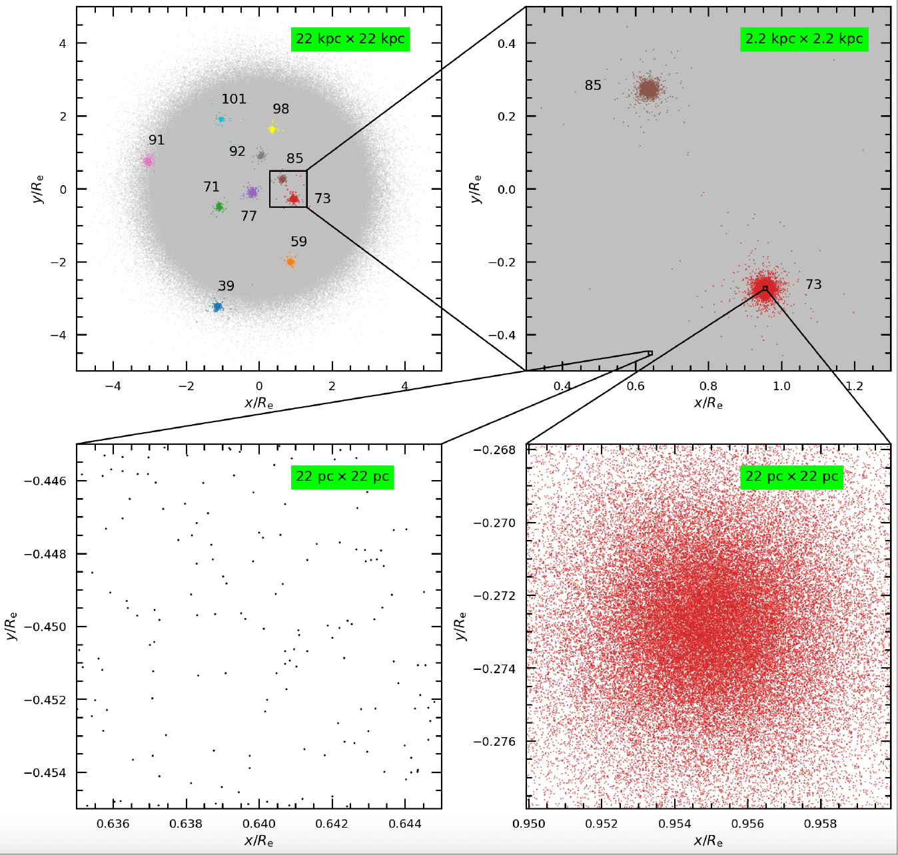
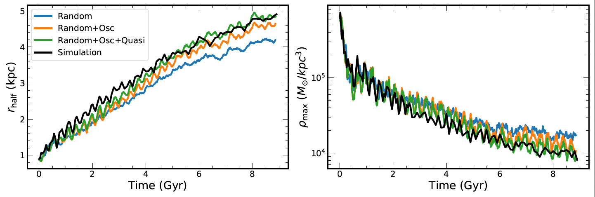

I am an Israel Academy of Sciences and Humanities Postdoctoral Fellow at the Hebrew University of Jerusalem. My hosts are Prof. Avishai Dekel and Dr. Nir Mandelker. I am interested in the physics of dark matter,
whose particle nature remains unknown. I am also interested in galaxies and star clusters, how they form and evolve,
and how their structure and dynamics (and those of other astrophysical objects such as black holes and tidal streams)
can be used to learn about dark matter.
I obtained my Ph.D. in Astrophysics in 2022 from Yale University under the supervision of Prof. Frank van den Bosch and Prof. Pieter van Dokkum.
Before that, I completed my bachelor's and master's degrees in Physics from the University of Calcutta and Presidency University
(erstwhile Presidency College), respectively. They are both located in Kolkata, a metro city in eastern India, where I was also born and brought up.
At the White Mountains, New Hampshire in 2019
Research
I work on a variety of topics broadly lying in the areas of dark matter physics,
galaxy formation, and dynamics. Please click on the buttons below to know more about my research.
Lunch Talk at Carnegie Observatories, Pasedena on Nov 5, 2021 link
State of the Universe Seminar at Tata Institute of Fundamental Research, Mumbai on April 21, 2023 link
Talk at the Galaxy Formation Workshop, UC Santa Cruz on Aug 8, 2023 link
Sunyaev-Zel'dovich Effect
In Dutta Chowdhury et al. 2017,
I estimated the Sunyaev-Zel’dovich (SZ) signal from quasar hosting halos in the absence of quasar
feedback using an analytical model for the halo gas (Komatsu and Seljak 2001) as well as the observed Planck Y-M relation
(where Y is the integrated total SZ temperature distortion from a halo of mass M) in conjunction with the Halo Occupation Distribution (HOD)
properties of quasars (
Chatterjee et al. 2012,
Shen et al. 2013). I then compared the theoretically estimated SZ signal from quasar hosts
in the absence of feedback to the observed signal obtained by stacking Planck SZ maps cross-correlated with the location of SDSS quasars
(Ruan et al. 2015,
Verdier et al. 2016).
This comparison demonstrated that while at low redshifts, it is difficult to differentiate between
the two signals, at high redshifts, the theoretically estimated signal is at least an order of magnitude lower than the observed one,
potentially indicating additional heating of the halo gas due to quasar feedback.

Theoretical and Observed SZ Signals: Theoretically estimated SZ signals from quasar hosting halos in the absence of quasar feedbkack
(using different combinations of the halo gas and quasar HOD models) are compared with the observed
signals obtained by stacking Planck SZ maps cross-correlated with the location of SDSS quasars.
The recently discovered galaxy NGC 1052-DF2 (DF2 hereafter) has received much attention because of its low dark matter content
(van Dokkum et al. 2018a,
Danieli et al. 2019)
and a rich population of unusually bright globular clusters (GCs, van Dokkum et al. 2018b). While the velocity dispersions of both
the stars and the GC population are consistent with the absence of dark matter, they also allow for a low mass (up to about five
times the total stellar mass) dark matter halo. My work on this galaxy addresses the following important questions:
I. Is the dynamics of the GCs consistent with a stars-only mass model?
Being massive, the GCs in DF2 are susceptible to orbital decay by losing energy via dynamical friction. Thus, if a mass model
for DF2 predicts very short inspiral timescales from current GC locations to the galaxy center, it is unlikely for the GCs to
be observed at those locations, and the said model can be ruled out. In Dutta Chowdhury et al. (2019), I have used N-body simulations to investigate the impact of
dynamical friction on the GCs in a stars-only mass model. I have demonstrated that while the GC system does lose energy and become more
compact over a timescale comparable to its age (~10 Gyr), the evolution is slow (inspiral timescale for the most massive GC is at least ~4 Gyr).
Moreover, dynamical friction ceases to operate within the galaxy's core, a phenomenon known as core-stalling (e.g, Read et al. 2006), and,
therefore, even the most massive GC can only sink as far as the core radius and no further. In addition to core-stalling, mutual scattering
among the GCs also keeps them dynamically buoyant, preventing them from sinking to the galaxy center. Therefore, a stars-only mass model is
perfectly viable as long as the GC system formed in a somewhat more extended state and slowly evolved to its current configuration.
Illustration I: Movie showing the evolution of the stars (red) and the 10 spectroscopically confirmed GCs (blue) in DF2 over 10 Gyr from one of my 50 multi-GC N-body
simulations of the system. All 50 simulations match observational constraints on both the stellar component of
DF2 and its GC population but differ in the initial line-of-sight positions and the tangential velocities of the GCs

Illustration II: Evolution of the 3D radii (left panels) and the orbital angular momenta (right panels)
of the 10 GCs in the same simulation as above. In addition to the cessation of dynamical friction in the stellar core (core stalling),
GC–GC scattering keeps the GCs afloat, preventing them from sinking to the center of the galaxy.
II. What happens when a dark matter halo is added?
Also, in Dutta Chowdhury et al. (2019),
using an approximate, semi-analytical dynamical friction prescription (Petts et al. 2015), I have estimated the orbital decay timescale
for a typical DF2 GC in the presence of a low mass, cuspy halo, which is allowed by the kinematic constraints, and found it to be significantly shorter in the central
region of the galaxy compared to a stars-only mass model. Such short inspiral timescales suggest that GCs in this region would rapidly
sink to the galaxy center, forming a nuclear star cluster, which is not supported by observations. Therefore, although allowed by
kinematic constraints, it is improbable for DF2 to have a low mass, cuspy halo. However, it could still have a low mass, cored halo,
which would also prevent the GCs from sinking to the galaxy center, similar to a baryonic core.

Illustration III: Different mass models (left panels) allowed within
the observational constraints and dynamical friction-induced orbital decay timescales (right panels) for a typical
DF2 GC on a circular orbit in these models. Dynamical stabilty arguments favor a stars-only model or low mass, dark
matter core over a low mass, dark matter cusp.
III. Are GC-GC mergers relevant?
In Dutta Chowdhury et al. (2019), I modeled the GCs in DF2 as hard spheres and, therefore, could not investigate
the possibility of GC-GC mergers. However, as the expected internal velocity dispersions (based on measured masses and sizes)
of the GCs are comparable to the velocity dispersion of the GC system, such a situation may be conducive to GC-GC mergers.
If true, this could explain the anomalous luminosity function of the GCs. Therefore, in Dutta Chowdhury et al. (2020), I re-simulated some of my previous hard-sphere simulations with live-GCs. Using the live-GC simulations and analytical modeling,
I have demonstrated that given their number density and sizes, the GC-GC merger rate in DF2 is too low to be of any significant
consequence. Therefore, unless the total number of initial GCs was much higher than that at present, the unusually high masses of
the GCs are most likely not an outcome of past GC-GC mergers.

Illustration IV: The live-GC simulations resolve a vast range of scales and densties. The galaxy is represented with 107 particles and the GCs with
19,000–75,000 particles, depending on the GC mass. The mass resolution of the simulations is 20 Msun.
The most popular dark matter model is Cold Dark Matter (CDM), where dark matter is collisionless and consists of weakly interacting massive
particles (WIMPs). However, the dearth of any direct evidence for either WIMPs (e.g., Liu et al. 2017) or supersymmetry has resulted in a surge of alternative dark matter models. Fuzzy dark matter (FDM), consisting of ultralight bosons (e.g., Hui et al. 2017), is one such alternative. While FDM behaves as CDM on large scales, it predicts new and exciting small-scale phenomena. FDM dynamics is governed by
the Schrodinger-Poisson (SP) equation, and simulations solving the SP equation show that FDM halos consist of a central core,
known as the soliton, surrounded by an outer envelope of oder unity density fluctuations (e.g., Schive et al. 2014). The soliton is the ground state of the SP equation, while the envelope consists of the excited states, whose interference gives rise to the density fluctuations. The excited
states also interfere with the soliton, causing it to wobble and oscillate (e.g., Schive et al. 2020).
Illustration I: Movie showing the projected density of an FDM halo of virial mass 6.6 x 109 Msun and boson mass
8 x 10-23 eV as a function of time. The red central nugget is the soliton, which is surrounded by an outer envelope of order unity
density fluctuations.
I. Dynamics of Nuclear Objects
In Dutta Chowdhury et al. 2021, using novel, high-resolution FDM simulations that zoom-in on an individual halo, run with the
code GAMER-2 ( Schive al. 2018), I have demonstrated that the gravitational potential fluctuations arising from the soliton's wobble,
its oscillations, and the envelope density fluctuations cause nuclear objects (e.g., black holes and nuclear star clusters), initially
placed at rest at the soliton center, to migrate outwards with time until counteracted by dynamical friction.
Illustration II: The outward migration of a 105 Msun particle, initially placed at rest at the soliton center, in the same FDM halo as above.
II. Dynamics of Dwarf Galaxies
In an ongoing study, I am examining the impact of FDM potential fluctuations on dwarf galaxies. My study shows that dwarf galaxies also get dynamically
heated over time in an FDM halo, undergoing significant size expansion and central density reduction over a Hubble time.
Illustration III: Dynamical Heating of a Dwarf Galaxy set up in equilibrium with the time-averaged potential in the same halo as above. The color map shows
the projected density of the galaxy. The brown cross-hair indicates the center-of-mass of the halo. The black dot and circles denote the soliton
center, core radius, and soliton radius, respectively, and the blue dot highlights the center-of-mass of the galaxy.
III. Semi-Analytical Heating Model
In another ongoing study, I am developing a semi-analytic technique to decompose the heating effect of FDM into its constituent elements - heating from the
soliton random walk, soliton oscillations, and the envelope density fluctuations outside the soliton, thereby establishing their relative importance
in the dynamical heating of galaxies and nuclear objects.

Illustration IV: Evolution of the galaxy half-mass radius (left panel) and central density (right panel) in the simulation (black) is
compared with that obtained from the semi-analytical heating model. The heating is dominated by contribution from the soliton's wobble (blue) and
the combined heating from the three different components in the semi-analytical model (green) is in reasonble agreement with the simulation results (black).
Dutta Chowdhury, D. , van den Bosch F.C., van Dokkum, P. et al.
“On the Dynamical Heating of Dwarf Galaxies in a Fuzzy Dark Matter Halo”, arXiv:2303.08846,
accepted for publication in ApJ
[ADS]
van Dokkum P. et al. including Dutta Chowdhury D.
"Monochromatic globular clusters as a critical test of formation models for the dark matter
deficient galaxies NGC1052-DF2 and NGC1052-DF4” 2022, ApJL 940 L9
[ADS]
van Dokkum P. et al. including Dutta Chowdhury D.
"A trail of dark-matter-free galaxies from a bullet-dwarf collision'' 2022, Nature, 605, 435
[ADS]
Dutta Chowdhury, D. , van den Bosch, F.C., Robles, V.H., van Dokkum, P. et al.
"On the Random Motion of Nuclear Objects in a Fuzzy Dark Matter Halo" 2021, ApJ, 916, 27
[ADS]
Shen, Z., Danieli, D., van Dokkum, P. et al. including Dutta Chowdhury, D.
"A Tip of the Red Giant Branch Distance of 22.1 +/- 1.2 Mpc to the Dark Matter
Deficient Galaxy NGC 1052–DF2 from 40 Orbits of Hubble Space Telescope Imaging'' 2021, ApJL, 914, L12
[ADS]
Dutta Chowdhury, D. , van den Bosch, F.C., and van Dokkum, P. "On the Evolution of the
Globular Cluster System in NGC 1052-DF2: Dynamical Friction, Globular-Globular Interactions, and Galactic Tides" 2020, ApJ, 903, 149
[ADS]
Dutta Chowdhury, D., van den Bosch, F.C., and van Dokkum, P. "On the Orbital Decay of Globular
Clusters in NGC 1052-DF2: Testing a Baryon Only Mass Model" 2019, ApJ, 877, 133
[ADS]
Ansar, S., Datta, K.K. and Dutta Chowdhury, D. "Impact of Inhomogeneous CMB Heating of Gas on the
HI 21-cm Signal During Dark Ages" 2018, PhysRevD, 98, 103505
[ADS]
Dutta Chowdhury, D. and Chatterjee, S. "Sunyaev-Zel’dovich Signal from Quasar Hosts: Implications
for Detection of Quasar Feedback" 2017, ApJ, 839, 34
[ADS]
Contact
The Racah Institute of Physics (Photo Credit: Wikipedia)
Address:
The Racah Institutue of Physics
The Hebrew University of Jerusalem
Room 209, Ross Building, Edmond J. Safra Campus
Jerusalem, 9190401